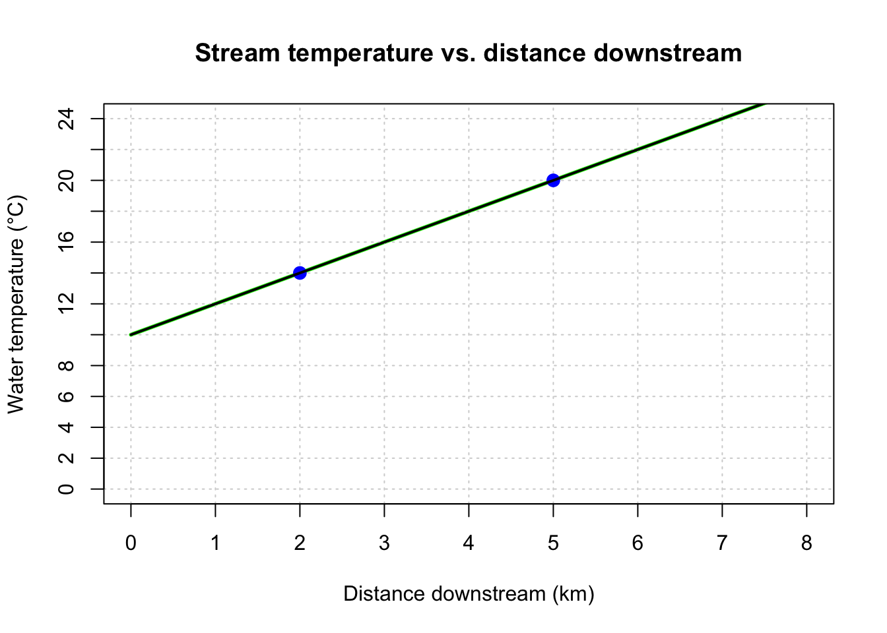
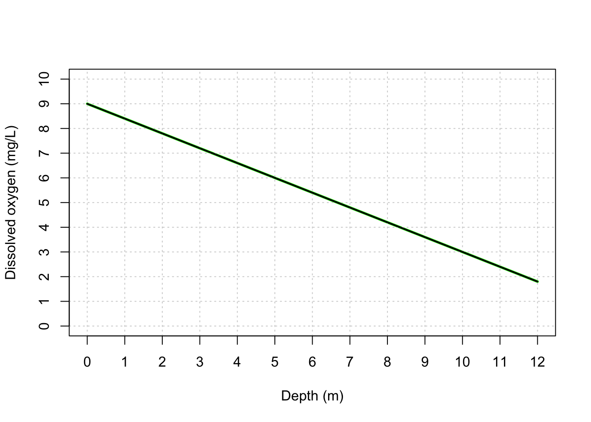
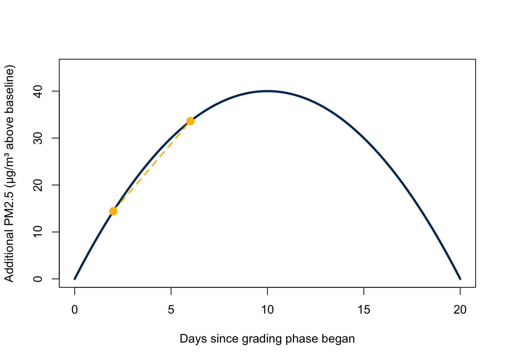
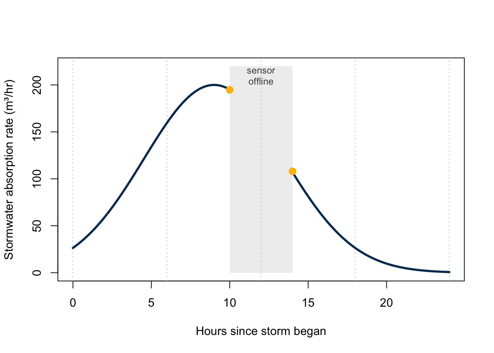

Warning
This page contains solutions. Go to the exercises without solutions.
Note
For every exercise below, write your final answer as a complete sentence, including units, as if you were explaining it to someone unfamiliar with the data.
Exercise 1
Environmental scientists model evapotranspiration (the combined loss of water from soil evaporation and plant transpiration) for a crop field. They believe evapotranspiration depends on: solar radiation, air temperature, and wind speed.
- In this scenario, which variable is the output (dependent variable), and which are the inputs (independent variables)?
- Write a sentence of the form “[output] is a function of [input(s)]” using the variable names.
- Suppose a simplified model turns out to be: \[ ET(R,T,W) = 0.02R + 0.15T - 0.05W \] where \(ET\) is evapotranspiration (mm/day), \(R\) is solar radiation (W/m²), \(T\) is air temperature (°C), and \(W\) is wind speed (km/hr). Evaluate this model when \(R=500\), \(T=25\), and \(W=10\), and state the result as a full sentence.
Solution
(a) Evapotranspiration is the output (dependent variable). Solar radiation, air temperature, and wind speed are the inputs (independent variables).
(b) “Evapotranspiration is a function of solar radiation, air temperature, and wind speed.”
(c) For example: \(ET\) = evapotranspiration (mm/day), \(R\) = solar radiation (W/m²), \(T\) = air temperature (°C), \(W\) = wind speed (km/hr). (Any reasonable, clearly-defined notation is fine!)
(d) \[ET(R, T, W) = [\text{expression containing } R, T, \text{ and } W]\]
(e) \[ ET(500, 25, 10) = 0.02(500) + 0.15(25) - 0.05(10) = 10 + 3.75 - 0.5 = 13.25 \]
“When solar radiation is 500 W/m², air temperature is 25°C, and wind speed is 10 km/hr, the model predicts an evapotranspiration rate of 13.25 mm per day.”
Exercise 2
A stream’s water temperature increases as you move downstream from a shaded headwater spring. At a monitoring station 2 km downstream, the water temperature is 14°C. At a station 5 km downstream, the temperature is 20°C. Assume temperature increases linearly with distance downstream.
- Find the equation for water temperature \(T\) (°C) as a function of distance downstream \(x\) (km).
- Create a plot showing the line. Clearly label the axes, including units, and add a title.
- What is the \(y\)-intercept of this line, and what does it mean in the context of the stream? Answer in a full sentence.
Solution
(a) Using the two points \((2, 14)\) and \((5, 20)\):
\[ m = \frac{20-14}{5-2} = \frac{6}{3} = 2 \]
Using point-slope form with \((2,14)\): \[ T - 14 = 2(x-2) \ \Rightarrow \ T = 2x + 10 \]
(b)
(c) The \(y\)-intercept is \(b = 10\).
“According to this model, the water at the very start of the stream (right at the headwater spring, 0 km downstream) is predicted to be 10°C.”
Exercise 3
Researchers plotted dissolved oxygen (DO) concentration against water depth in a lake, and found the relationship was linear over the depth range sampled.

- Write the equation for dissolved oxygen, \(DO\), as a function of depth.
- Interpret the slope in a full sentence, including units.
Solution
(a) The line passes through \((0, 9)\) and \((10, 3)\), so:
- \(y\)-intercept: \(9\)
- slope: \(\frac{3-9}{10-0} = \frac{-6}{10} = -0.6\)
\(DO(depth) = -0.6 \cdot depth + 9\)
(b)
“For every additional meter of depth, dissolved oxygen concentration decreases by an average of 0.6 mg/L, starting from a surface concentration of about 9 mg/L.”
Exercise 4
The city has begun a 20-day, round-the-clock grading and paving phase for a highway-widening project that cuts directly through the Westside neighborhood, a community that already bears a disproportionate share of the region’s industrial pollution and truck traffic. In response, a community air-quality monitoring group tracked the additional fine particulate matter concentration, \(P(t)\) (µg/m³ of PM2.5 above baseline), in the neighborhood’s air over the 20 days of that construction phase.
| \(t\) (days) | \(P(t)\) (µg/m³) |
|---|---|
| 2 | 14.4 |
| 6 | 33.6 |
| 10 | 40.0 |
| 14 | 33.6 |
| 18 | 14.4 |

- Calculate the average rate of change in additional PM2.5 concentration between day 2 and day 6.
- Write your answer as a full sentence, with units, without overstating certainty.
Solution
\[ \text{average rate of change} = \frac{P(6) - P(2)}{6-2} = \frac{33.6 - 14.4}{4} = \frac{19.2}{4} = 4.8 \ \frac{\mu\text{g/m}^3}{\text{day}} \]
Between day 2 and day 6 of the grading phase, additional PM2.5 concentration in the Westside neighborhood increased by an average of 4.8 µg/m³ per day.
Exercise 5
Since 2010, a mountain glacier has been losing volume at an accelerating pace as regional temperatures rise. Researchers model the cumulative ice volume lost, \(V(t)\) (in km³), since monitoring began, as:
\[ V(t) = 0.5t^2 + 2t \]
where \(t\) is years since 2010.
- Use differentiation rules to find \(V'(t)\).
- Evaluate \(V'(5)\). What does this value mean in the context of the glacier? State it as a full sentence, with units.
- Now calculate the average rate of ice loss between \(t=4\) and \(t=8\).
- Are the values from (b) and (c) the same? In your own words, explain conceptually why an “average” rate of change over an interval doesn’t have to match the “instantaneous” rate of change at a single point within it.
Solution
(a) Using the power rule and sum rule: \[ V'(t) = t + 2 \]
(b) \[ V'(5) = 5 + 2 = 7 \ \frac{\text{km}^3}{\text{year}} \]
“In 2015 (five years after monitoring began), the glacier was losing ice at an instantaneous rate of about 7 km³ per year.”
(c) \[ V(4) = 0.5(4)^2+2(4) = 16, \qquad V(8) = 0.5(8)^2+2(8) = 48 \] \[ \text{average rate of change} = \frac{V(8)-V(4)}{8-4} = \frac{48-16}{4} = 8 \ \frac{\text{km}^3}{\text{year}} \]
(d) The two values are close, but not the same (7 vs. 8 km³/year). The average rate of change smooths the ice loss out over the entire 4-year window from \(t=4\) to \(t=8\), while the instantaneous rate captures the exact pace of loss at the single moment \(t=5\).
Exercise 6
After restoring a section of coastal wetland, ecologists measure the rate at which the wetland absorbs stormwater runoff, \(r(t)\) (in m³/hour), throughout a 24-hour storm. The graph below shows this absorption rate over time. Partway through the storm, the monitoring sensor lost power and went offline between hour 10 and hour 14 (shaded region in the graph) — but you still need to report an estimate of the total volume of stormwater absorbed over the full 24-hour storm.

- What does the area under this curve represent, in words? Be sure to include units.
- Looking at the shape of the graph (without calculating anything), during which 6-hour window — hours 0–6, 6–12, 12–18, or 18–24 — do you expect the largest volume of stormwater to have been absorbed? Explain your reasoning.
- Describe how you would handle the sensor gap when estimating the total area under the curve. What assumption(s) would you have to make, and how would the location of this particular gap affect your confidence in the final estimate?
Solution
(a) The area under the rate curve represents the total volume of stormwater absorbed by the wetland over that time period, in m³ (rate in m³/hr \(\times\) time in hr = volume in m³).
(b) Hours 6–12. The curve is highest and covers the most area in that window, since the absorption rate peaks around hour 9 — the middle of the storm, when the ground is saturated and inflow is greatest.
(c) Since there’s no direct measurement between hour 10 and hour 14, we’d have to interpolate — for example, connecting the last known point (hour 10) to the first known point (hour 14) with a straight line, and using that as our best guess for the missing area. This assumes the rate changed smoothly and roughly monotonically across the gap.
That assumption is riskier here than it would be for an arbitrary gap, because this particular gap covers the storm’s peak — the point where the true curve is doing the most curving. A straight-line interpolation would cut across that peak and likely underestimate the true absorption rate for most of the gap, so our total volume estimate is probably a bit too low, and we should be less confident in it than we would be if the same size gap had fallen during a flatter part of the storm.
Exercise 7
Forestry officials discover an invasion of an invasive insect in a county park. They estimate the insect population grows exponentially, following \(N(t) = N_0 e^{rt}\), where \(N_0\) is the initial number of egg masses counted per hectare, and \(t\) is time in years since detection.
At detection (\(t=0\)), officials count \(N_0 = 150\) egg masses per hectare. Four years later, the count has grown to \(400\) egg masses per hectare.
- Solve for the growth rate \(r\).
- Forestry regulators will impose a mandatory quarantine zone if the population reaches \(5{,}000\) egg masses per hectare. Using your value of \(r\), solve for the time \(t\) at which this threshold will be reached.
- State your answer to (b) as a full sentence.
Solution
(a) \[ \begin{aligned} 400 &= 150e^{4r} \\ \frac{400}{150} &= e^{4r} \\ \ln\!\left(\frac{400}{150}\right) &= 4r \\ r &= \frac{\ln(2.667)}{4} \approx 0.245 \end{aligned} \]
(b) \[ \begin{aligned} 5000 &= 150e^{0.245t} \\ \frac{5000}{150} &= e^{0.245t} \\ \ln(33.33) &= 0.245t \\ t &= \frac{\ln(33.33)}{0.245} \approx 14.3 \end{aligned} \]
(c)
If the current growth trend continues, the insect population is expected to reach the quarantine threshold of 5,000 egg masses per hectare about 14.3 years after it was first detected.
All the functions and example data are synthetic and were generated with the aid of Claude Code for the purpose of this session.